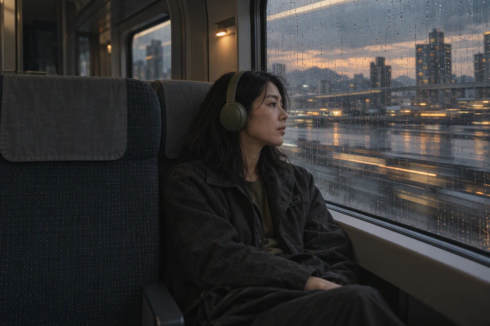

HELLO, WE ARE HIS.FM
在每一次更新之间，
生活照常发生。

屏幕那边，
是具体的人。
his.fm 是一档面向成年开发者的中文播客。聊新的工具、新的工作方式，也聊睡眠、休息和下班以后的日常。
一个开源项目、一项研究，可能让我们重新看见一件身边的小事：为什么晚上总想再看一条教程，怎样和同事说清一个问题，什么时候能安心吃一顿晚饭。
节目采用单人播讲，每期通常按十分钟准备。有些问题不会在十分钟里得到答案，我们可以先把它说具体。
资料整理、文稿、封面与声音制作有 AI 参与，发布前由频道所有者确认。这里没有虚构的采访或主持人亲历。
从第一篇文稿开始 ↗